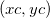
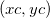

Um die Anzeige von allen ROI-Feldern in einem Diagramm gleichzeitig zu wechseln, klicken Sie auf die Schaltfläche H  in der oberen rechten Ecke des Diagramms. Damit können Anwender das Diagramm mit den Minitoolergebnissen exportieren.
in der oberen rechten Ecke des Diagramms. Damit können Anwender das Diagramm mit den Minitoolergebnissen exportieren.
| Modus |
Legen Sie den Modalwert der Basislinie fest. Optionen:
-
Kein (Y=0)
- Y=0 wird als Basislinie verwendet.
-
Konstante
- Verwendet eine horizontale Linie als Basislinie. Sie können die Schnittstelle der horizontalen Linie mit der Y-Achse unter Konstant unten festlegen.
-
2. Ableitung
- Sie verwenden die 2. Ableitung zur Erstellung der Basislinie.
-
Verwende bestehenden Datensatz
- Verwendet einen vorhandenen Datensatz als Basislinie.
-
Min. & Max.
- Der minimale Y-Wert wird als Basislinie verwendet, um positive Peaks zu suchen. Der maximale Y-Wert wird als Basislinie verwendet, um negative Peaks zu suchen.
-
Endpunkte gewichtet
- Erstellt eine geglättete Kurve unter Verwendung von Datenpunkten von zwei Enden.
-
Gerade Linie
- Die zwei Endpunkte der Datenzeichnung werden als Basislinie verbunden.
|
| Bereich |
Diese Option ist nur dann verfügbar, wenn der Modalwert auf Konstant gesetzt wurde. Bestimmen Sie, wie der Basislinienbereich in der grafischen Datenauswahl angezeigt wird.
-
Bereich des gesamten Diagramms
- Erstellt die Basislinie für den gesamten Zeichnungsbereich.
-
Kurve in der grafischen Datenauswahl
- Erstellt die Basislinie nur für den Bereich innerhalb der grafischen Datenauswahl.
|
| X festlegen auf |
Diese Option ist nur dann verfügbar, wenn der Modalwert auf Gerade Linie gesetzt wurde. Legen Sie fest, wie die Endpunkte der geraden Linie bestimmt werden.
-
Gesamte Daten
- Die Endpunkte der Datenzeichnung werden verwendet.
-
Rechteck
- Die Endpunkte an den Rändern des ROI-Felds werden verwendet.
-
Skalieren
- Die Endpunkte an der X-Achsenskala werden verwendet.
|
| Y-Versatz von links |
Diese Option ist nur dann verfügbar, wenn der Modalwert auf Gerade Linie gesetzt wurde. Legen Sie den Versatz nach links der Endpunkte auf der Y-Achsenskala fest. |
| Y-Versatz von rechts |
Diese Option ist nur dann verfügbar, wenn der Modalwert auf Gerade Linie gesetzt wurde. Legen Sie den Versatz nach rechts der Endpunkte auf der Y-Achsenskala fest. |
| Glättungsmethode |
Auswahl der Glättungsmethode zum Erstellen der Basislinie Diese Option ist nur dann verfügbar, wenn der Modalwert auf 2. Ableitung gesetzt wurde.
- Fenstergröße: Bestimmen Sie die gewünschte Fenstergröße (eine positive ganze Zahl) für die Glättungsmethoden Savitzky-Golay oder Gleitender Durchschnitt.
- Schwellenwert: Bestimmen Sie einen Schwellenwert für die Glättungsmethoden Savitzky-Golay oder Gleitender Durchschnitt.
- Polynomielle Ordnung: Dieser Parameter ist nur verfügbar, wenn Savitzky-Golay als Glättungsmethode ausgewählt wurde. Er bestimmt die polynomielle Ordnung (1 bis 9).
|
| Maximale Ankerpunkte |
Bestimmen Sie die maximale Anzahl der Ankerpunkte einer Basislinie. Diese Option ist nur verfügbar, wenn Sie den Modalwert auf 2. Ableitung gesetzt haben. |
| Verbindungsmethode |
Bestimmen Sie die Verbindungsmethode für die Ankerpunkte. Diese Option ist nur verfügbar, wenn Sie den Modalwert auf 2. Ableitung gesetzt haben. |
| Konstante |
Verwenden Sie die Auswahlliste, um die Schnittstelle mit der Y-Achse für die horizontale Linie festzulegen, die als Basislinie verwendet wird.
-
Minimum
- Legen Sie die Schnittstelle als Wert des Minimums der Daten fest.
-
Maximum
- Legen Sie die Schnittstelle als Wert des Maximums der Daten fest.
-
Mittelwert
- Legen Sie die Schnittstelle als Mittelwert der Spektrumsdaten fest.
-
Median
- Legen Sie die Schnittstelle als Median der Spektrumsdaten fest.
-
Benutzerdefiniert
- Diese Option erlaubt es Ihnen, eine gewünschte Schnittstelle mit der Y-Achse als Basislinie festzulegen.
|
| Y = |
Bestimmen der benutzerdefinierten Schnittstelle für die horizontale Linie als Basislinie. Diese Option ist nur verfügbar, wenn für Konstant Benutzerdefiniert ausgewählt wurde. |
| Datensatz |
Bestimmen Sie einen Datensatz als Basislinie. Diese Option ist nur verfügbar, wenn für den Modalwert die Option Verwende bestehenden Datensatz ausgewählt wurde. |
| Endpunkte (%) |
Bestimmen Sie die Anzahl der Endpunkte zum Erstellen der Basislinie. Diese Option ist nur verfügbar, wenn für den Modalwert die Option Endpunkte gewichtet ausgewählt wurde. |
| Richtung |
Legen Sie fest, ob die Peaks nur mit einer festgelegten Richtung gesucht werden sollen oder nicht.
-
Positiv
- Es wird nur nach positiven Peaks gesucht.
-
Negativ
- Es wird nur nach negativen Peaks gesucht.
-
Beide
- Es wird nach positiven und negativen Peaks gesucht.
|
| Einstellungen der Peaksuche |
Bestimmen Sie die Einstellungen zum Suchen von Peaks.
-
Methode: Verwenden Sie die Auswahlliste, um die Methode zum Suchen der Peaks festzulegen.
-
Lokales Maximum
- Verwendet die Methode Lokales Maximum, um die Peaks zu suchen.
-
Suchen im Fenster
- Verwendet die Methode Suchen im Fenster, um die Peaks zu suchen.
-
1. Ableitung
- Verwendet die Methode 1. Ableitung, um die Peaks zu suchen.
-
2. Ableitung (Verborgene Peaks suchen)
- Verwendet die Methode 2. Ableitung, um die Peaks zu finden. Diese Methode kann verborgene Peaks in den Daten erkennen.
-
Residuum nach erster Ableitung (Verborgene Peaks suchen)
- Verwenden Sie die Methode Residuum nach erster Ableitung, um die Peaks zu suchen. Diese Methode kann verborgene Peaks in den Daten erkennen.
- Lokale Punkte: Dies ist nur verfügbar, wenn Lokales Maximum in der Auswahlliste Methode ausgewählt ist. Die Anzahl der Punkte im lokalen Bereich wird festgelegt, die zum Suchen der Peaks mit der Methode Lokales Maximum verwendet werden.
-
Größenoption: Dies ist nur verfügbar, wenn Suchen im Fenster in der Auswahlliste Methode ausgewählt ist. Dieses Auswahlliste legt fest, wie die Werte Höhe und Breite (siehe unten) interpretiert werden.
-
Rohgröße
- Die Werte werden als Rohgrößen interpretiert.
-
Prozentanteil der Rohdaten
- Die Werte werden als Prozentsätze interpretiert hinsichtlich der Gesamtbreite oder maximalen Höhe der Spektrumsdaten.
- Höhe: Dies ist nur verfügbar, wenn Suchen im Fenster in der Auswahlliste Methode ausgewählt ist. Diese Variable bestimmt die Höhe des Rechtecks, das zum Suchen der Peaks im Diagramm verwendet wird. Auf der rechten Seite ist ein Kontrollkästchen Auto zu sehen. Wenn es aktiviert ist, wird der Wert automatisch festgelegt. Daher müssen Sie das Kontrollkästchen deaktivieren, wenn Sie den Wert bearbeiten möchten.
- Breite: Dies ist nur verfügbar, wenn Suchen im Fenster in der Auswahlliste Methode ausgewählt ist. Diese Option legt die Breite des Rechtecks, das zum Suchen der Peaks im Diagramm verwendet wird, fest. Auf der rechten Seite ist ein Kontrollkästchen Auto zu sehen. Wenn es aktiviert ist, wird der Wert automatisch festgelegt. Daher müssen Sie das Kontrollkästchen deaktivieren, wenn Sie den Wert bearbeiten möchten.
-
Ableitung glätten: Diese Option ist nur verfügbar, wenn 1. Ableitung, 2. Ableitung (Verborgene Peaks suchen) oder Residuum (Verborgene Peaks suchen) in der Auswahlliste Methode ausgewählt ist. Bestimmt die Methode zum Glätten der Ableitung der Spektrumsdaten (1. Ableitung oder 2. Ableitung).
-
Methode: Bestimmt die Glättungsmethode.
-
Kein
- Es wird keine Glättungsmethode verwendet.
-
Savitzky-Golay
- Die Methode Savitzky-Golay wird zum Glätten der Ableitung verwendet.
-
FFT-Filter
- Die Methode FFT-Filter wird zum Glätten der Ableitung verwendet. Dies ist nur für 2. Ableitung (Verborgene Peaks suchen) verfügbar.
-
Gleitender Durchschnitt
- Die Methode Gleitender Durchschnitt wird zum Glätten der Ableitung verwendet. Dies ist nur für 2. Ableitung (Verborgene Peaks suchen) verfügbar.
-
Quadratische Savitzky-Golay
- Bestimmt die Methode Quadratische Savitzky-Golay zum Glätten der Ableitung. Dies ist nur für 2. Ableitung (Verborgene Peaks suchen) verfügbar.
- Polynomielle Ordnung: Dies ist für die Methoden Savitzky-Golay und Quadratische Savitzky-Golay zur Bestimmung der polynomiellen Ordnung verfügbar.
- Punkte des Fensters: Dies ist für die Methoden Savitzky-Golay, Gleitender Durchschnitt und Quadratische Savitzky-Golay verfügbar. Je größer dieser Wert ist, desto größer ist der Glättungsgrad. Ein Wert von Null für diesen Parameter belässt die Daten ungeglättet.
- Grenzfrequenz: Dies ist nur für die Methode FFT-Filter verfügbar. Diese Option legt die Grenzfrequenz fest.
|
| Peakfilterung |
Bestimmen Sie, wie die Peaks gefiltert werden.
-
Methode: Verwenden Sie diese Auswahlliste, um festzulegen, ob Sie die Anzahl der gefundenen Peaks oder die Höhe der Peaks begrenzen möchten.
-
Kein
- Wählen Sie diese Option aus, wenn Sie weder die Anzahl der gefundenen Peaks noch die Höhen der Peaks begrenzen möchten.
-
Nach Höhe
- Wenn Sie diese Option auswählen und eine Schwellenwerthöhe mit dem Textfeld Höhe des Schwellenwerts(%) festlegen, werden nur die Peaks, deren Höhen nicht geringer sind als die Höhe des Schwellenwerts, gefunden.
-
Nach Anzahl
- Wenn Sie diese Option auswählen und einen Wert im Textfeld Anzahl der Peaks eingeben, können Sie die Anzahl der Peaks begrenzen, die gefunden werden.
- Schwellenwerthöhe (%): Dieses Textfeld ist nur verfügbar, wenn Nach Höhe in der Auswahlliste Methode ausgewählt wird. Sie können es verwenden, um die minimale Höhe der gefundenen Peaks festzulegen. Der Wert ist in Prozent eines Referenzwerts, der wie folgt definiert ist: Berechnen Sie zunächst Maximalwert und Minimalwert der Daten (falls eine Basislinie entfernt wurde, verwenden Sie die Daten nach dem Subtrahieren). Anschließend vergleichen Sie dann die absoluten Werte von Maximum und Minimum. Der größere von beiden wird als Referenzwert der Schwellenwerthöhe betrachtet. Auf der rechten Seite ist ein Kontrollkästchen Auto zu sehen. Wenn dieses aktiviert ist, werden die Glättungspunkte automatisch festgelegt. Wenn Sie die Höhe festlegen möchten, stellen Sie die Deaktivierung dieses Kontrollkästchens sicher.
- Anzahl der Peaks: Dieses Textfeld ist nur verfügbar, wenn Anzahl in der Auswahlliste Methode ausgewählt wird. Sie können es verwenden, um die maximale Anzahl der gefundenen Peaks festzulegen. Auf der rechten Seite ist ein Kontrollkästchen Auto zu sehen. Wenn dieses aktiviert ist, werden die Glättungspunkte automatisch festgelegt. Wenn Sie die Anzahl der Peaks festlegen möchten, stellen Sie die Deaktivierung dieses Kontrollkästchens sicher.
|
| Peakanzeige |
Peakmarkierer: Bestimmt, ob die Peakmarkierung angezeigt wird.
- Farbe: Die Farbe der Peakmarkierung
- Größe: Die Größe der Peakmarkierung Diese Auswahlliste erlaubt es Ihnen, eine Zahl zu schreiben, die dort nicht aufgelistet ist.
Peakbeschriftung: Legt fest, ob die Peakbeschriftung angezeigt wird.
-
Beschriftung: Die Auswahl, welche Beschriftung des Peaks angezeigt werden soll, besteht aus drei Optionen:
- X der Peaks: Zeigt nur die X-Skala der Peaks als Peakbeschriftung.
- Y der Peaks: Zeigt nur die Y-Skala der Peaks als Peakbeschriftung.
- (X,Y) der Peaks: Zeigt sowohl X- als auch Y-Skala der Peaks als Peakbeschriftung.
 |
Wenn Sie eine Formel auf die Beschriftungen der Achsenhilfsstriche angewendet haben, können Sie den mit der Formel angepassten Hilfsstrichswert im gegensatz zum tatsächlichen Datenwert (Skala) mit Hilfe des Felds Numerisches Anzeigeformat auf der Registerkarte Beschriftung im Dialog Details Zeichnung anzeigen.
|
Basismarkierung: Bestimmt, ob die Basismarkierung angezeigt wird. Beachten Sie, dass, wenn mehr als 100 Peaks gefunden werden, kein Basismarkierer gezeigt wird, auch wenn er aktiviert ist.
- Farbe: Die Farbe der Basismarkierung
- Größe: Die Größe der Basismarkierung Diese Auswahlliste erlaubt es Ihnen, eine Zahl zu schreiben, die dort nicht aufgelistet ist.
|
| Peak und Basis markieren als |
-
Datenzeichnung
- Ist diese Option ausgewählt, werden die markierten Peakbeschriftungen, später, wenn Sie Peaks markieren im Ausklappmenü des Minitool auswählen, automatisch als Datenzeichnung erstellt und zu dem ursprünglichen Diagramm hinzugefügt.
-
Markierung
- Ist diese Option ausgewählt, werden die markierten Peakbeschriftungen, später, wenn Sie Peaks markieren im Ausklappmenü des Minitool auswählen, nur als Datenmarkierungen hinzugefügt. Sie können aber mit der rechten Maustaste auf die Datenmarkierung klicken (bewegen Sie die Maus über sie und klicken Sie mit der rechten Maustaste, wenn der Cursor sich in ein Kreuz verwandelt) und wählen Sie In Datenzeichnung konvertieren, um die Datenmarkierung in die Datenzeichnung umzuwandeln.
|
| Skriptfenster |
Legen Sie fest, ob die Ergebnisse im Skriptfenster ausgegeben werden.
|
| Ergebnisfenster |
Legen Sie fest, ob das Ergebnis im Ergebnisfenster ausgegeben wird. |
| An Arbeitsblatt anhängen: |
Legen Sie fest, ob die Ergebnisse an das Arbeitsblatt angehängt werden.
|
| Ergebnisblattname |
Diese Option ist nur verfügbar, wenn An Arbeitsblatt anhängen ausgewählt ist. Sie wird verwendet, um den Namen des Arbeitsblatts festzulegen.
- Wenn Sie eine neue Ausgabe erzeugen, werden die Ergebnisse standardmäßig in [%H-QkPeak]Result (hier bezeichnet %H den Kurznamen des Quelldiagramms) ausgegeben, aber es können auch andere Mappen und Blätter festgelegt werden. Falls die Mappe und das Blatt nicht existieren, werden sie bei der Ausgabe erstellt.
- Alternativ können Sie auf die Ausklappschaltfläche
 rechts von Ergebnisblattname klicken und Blatt in Eingabemappe wählen. Das Bearbeitungsfeld wird mit [<input>]Result gefüllt. Wenn Sie eine neue Ausgabe erzeugen, werden die Ergebnisse in ein Blatt mit dem Namen Result in der Quellmappe ausgegeben. rechts von Ergebnisblattname klicken und Blatt in Eingabemappe wählen. Das Bearbeitungsfeld wird mit [<input>]Result gefüllt. Wenn Sie eine neue Ausgabe erzeugen, werden die Ergebnisse in ein Blatt mit dem Namen Result in der Quellmappe ausgegeben.
|
| Name für Arbeitsblatt mit Markierungsinfo |
Legen Sie den Namen des Ausgabeblatts fest, um die Markierungsinformationen zu speichern.
Falls auf der Registerkarte Peaks suchen:
- Peak und Basis markieren als auf Datenzeichnung gesetzt ist, wird ein neues Arbeitsblatt mit festgelegtem Namen und den Markierungsinfos, wenn eine Ausgabe erzeugt wird, erstellt. Übernehmen Sie das standardmäßige [%H-QkPeak]Tag oder klicken Sie auf die Ausklappschaltfläche rechts von Name für Arbeitsblatt mit Markierungsinfo und wählen Sie Blatt in Eingabemappe wählen. Das Bearbeitungsfeld wird mit [<input>]Tag gefüllt. Wenn Sie Neue Ausgabe (O) wählen, wird die Ausgabe in einem Blatt mit dem Namen Tag in der Mappe QkPeak oder in der Quellmappe ausgegeben. Alternativ können Sie einen [BookName]SheetName in das Feld eingeben. Falls die Mappe und das Blatt nicht existieren, werden sie bei Erzeugen der Ausgabe erstellt.
- Peak und Basis markieren als ist auf Markierer gesetzt. Das Arbeitsblatt wird nicht erstellt, weil Markierer keine verbundenen Daten hat.
|
| Basislinie in Arbeitsblatt ausgeben |
Bestimmen Sie, ob die Basislinie im Arbeitsblatt ausgegeben wird.
|
| Basislinienblattname |
- Wenn Sie eine neue Ausgabe erzeugen, werden die Ergebnisse standardmäßig in [%H-QkPeak]Baseline ausgegeben, aber es können auch andere Mappen und Blätter festgelegt werden. Falls die Mappe und das Blatt nicht existieren, werden sie bei der Ausgabe erstellt.
- Alternativ können Sie auf die Ausklappschaltfläche rechts von Ergebnisblattname klicken und Blatt in Eingabemappe wählen. Das Bearbeitungsfeld wird mit [<input>]Basislinie gefüllt. Wenn Sie eine neue Ausgabe erzeugen, werden die Ergebnisse in einem Blatt mit dem Namen Baseline in der Quellmappe ausgegeben.
|
| Neue Ausgabe |
Ausgabe der Ergebnisse in das angegebene Arbeitsblatt (falls nicht leer, werden die Ergebnisse angehängt). |
| Neue Ausgabe für gesamte Kurve |
Die Ergebnisse für alle Peaks in der aktuellen Zeichnung werden in dem festgelegten Arbeitsblatt ausgegeben (wenn es nicht leer ist, werden die Ergebnisse angehängt). |
| Neue Ausgabe für alle Kurven (N) |
Die Ergebnisse für alle Kurven in dem aktuellen Layer werden in dem festgelegten Arbeitsblatt ausgegeben (wenn es nicht leer ist, werden die Ergebnisse angehängt). |
| Neue Ausgabe für alle Layer (L) |
Die Ergebnisse für alle Kurven in allen Layern innerhalb des aktuellen Diagramms werden in dem festgelegten Arbeitsblatt ausgegeben (wenn es nicht leer ist, werden die Ergebnisse angehängt). |
| Basislinie subtrahieren |
Die angegebene Basislinie wird von den Quelldaten im Feld grafische Datenauswahl subtrahiert. |
| Zum Berichtsarbeitsblatt gehen |
Das Berichtsblatt wird, falls vorhanden, aktiviert. |
| Ausgabe in Zwischenablage |
Wenn diese Option ausgewählt ist (Menüelement aktiviert), wird die Neue Ausgabe in der Zwischenablage abgelegt. |
| Peaks markieren |
Markieren Sie die gefundenen Peaks und fügen Sie die Peakbeschriftungen für die gefundenen Peaks als Beschriftungszeichnung oder Datenmarkierung in das ursprüngliche Diagramm hinzu. Die Beschriftungen sind auch noch vorhanden, wenn das Minitool geschlossen wird. Wenn die Peaks als Datenmarkierung hinzugefügt werden, können Sie von dem Hilfsmittel Mehrere Peaks anpassen verwendet werden (im Menü Analyse: Peaks und Basislinie: Mehrere Peaks anpassen). |
| Peaks anpassen |
Die gefundenen Peaks werden durch Festlegen einer Anpassungsfunktion angepasst. |
| Zum Hilfsmittel Peaks analysieren wechseln |
Wechseln Sie zum Hilfsmittel Peaks analysieren, um die gefundenen Peaks anzupassen. Weitere Einzelheiten zum Anpassen der Peaks im Dialog Peaks analysieren finden Sie auf dieser Hilfeseite. |
| Ausgabe aktualisieren |
Die Ausgabe wird aktualisiert, die ursprünglichen Ergebnisse gelöscht und die aktuellen Ergebnisse hinzugefügt. Dies ist nur dann anwendbar, wenn Sie die Peakwerte ausgegeben haben. |
| Daten ändern |
Der Quelldatensatz wird geändert. Diese Option kann nur verwendet werden, wenn es mehrere Kurven in dem Diagramm gibt.
- Klicken Sie auf eine Zeichnung, um sie auszuwählen.
- Klicken Sie auf Auswählen oder Mehr..., um den Browser Diagramme auswählen aufzurufen.
- Standard ist, dass der Modus Auto im Ausklappmenü aktiviert ist. Das bedeutet, dass die Zieldaten/-zeichnung der Auswahl/Markierung der Datenzeichnung außerhalb des ROI-Felds im Diagramm folgen. In Origin 2019 und älteren Versionen unterstützt Origin dieses automatische Verhalten nicht. Um das Zieldiagramm/die Zieldaten zu ändern, müssen Sie die Ausklappliste oder den Dialog Diagramme auswählen verwenden.
Bitte beachten Sie, dass, wenn Sie die Quelldaten/das Zieldiagramm ändern, die Peakmarkierer und Peakbeschriftungen von gefundenen Peaks automatisch auf der neu ausgewählten Zeichnung entsprechend den Einstellungen auf der Registerkarte Peaks suchen gezeigt werden. Falls Sie die Peakmarkierer und -beschriftungen auf der aktuellen Zeichnung beibehalten möchten, wählen Sie Peaks markieren im Ausklappmenü.
|
| Auf gesamten Bereich der Zeichnung(en) erweitern |
Erweitert die grafische Datenauswahl auf den gesamten Diagrammbereich. |
| ROI-Position festlegen |
Fixiert die Position der grafischen Datenauswahl, so dass sie nicht mehr verschoben werden kann. |
| Design speichern |
Design für die Dialogeinstellungen wird gespeichert. |
| Als <Standard> speichern |
Die aktuellen Dialogeinstellungen als werden Standarddesign gespeichert. |
| Design laden |
Ein vorhandenes Design wird zur Anwendung auf die Dialogeinstellungen geladen. |
| Einstellungen |
Öffnet den Dialog Minitool Peakanalyse Einstellungen, der dem Dialog ähnelt, der sich bei Auswahl von Minitools: Peakanalyse öffnet. |

dx}{\int_{0}^{\infty}F(x)dx}")
 zeichnen, wird diese Linie die Y-Achse mit den Eingabedaten an zwei Punkten schneiden. Bezeichnen wir sie als und , wobei
zeichnen, wird diese Linie die Y-Achse mit den Eingabedaten an zwei Punkten schneiden. Bezeichnen wir sie als und , wobei  . Wir bezeichnen das Peakzentrum als . Dann können wir die Breite der linken Hälfte folgendermaßen berechnen mit:
. Wir bezeichnen das Peakzentrum als . Dann können wir die Breite der linken Hälfte folgendermaßen berechnen mit: